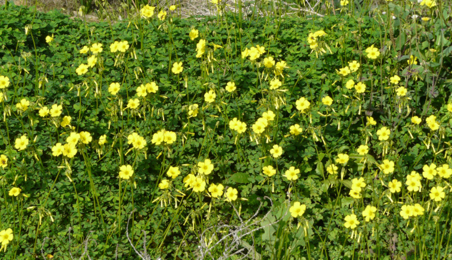
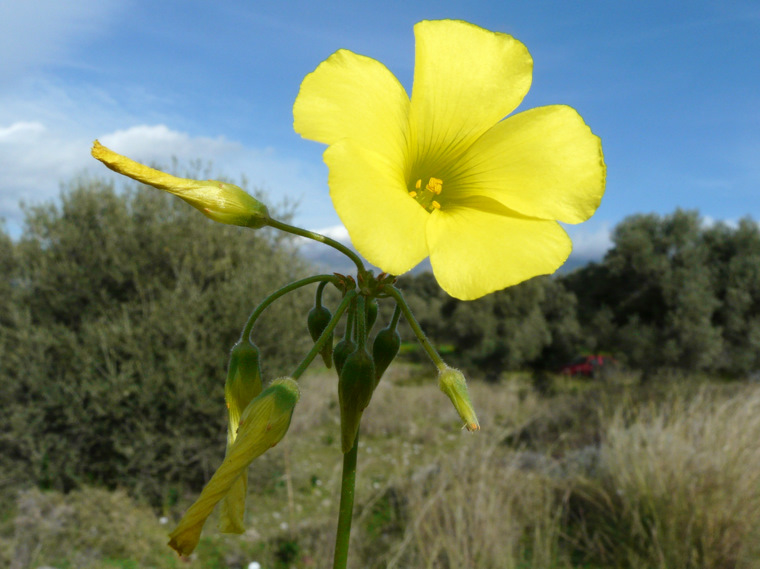
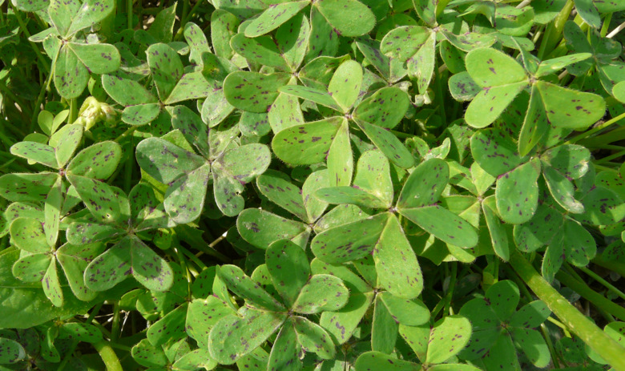
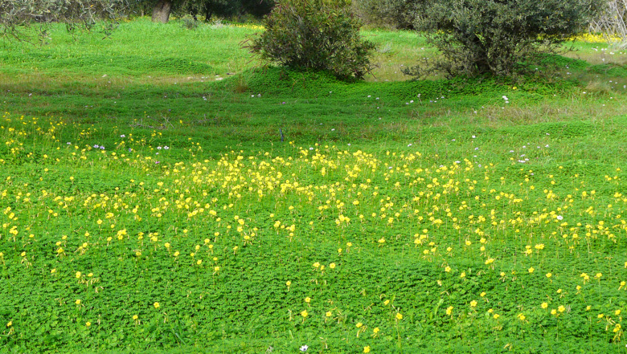
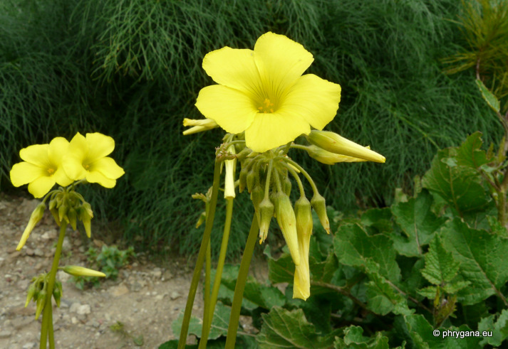
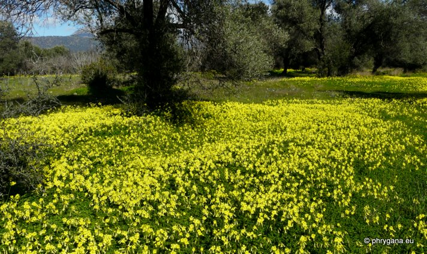
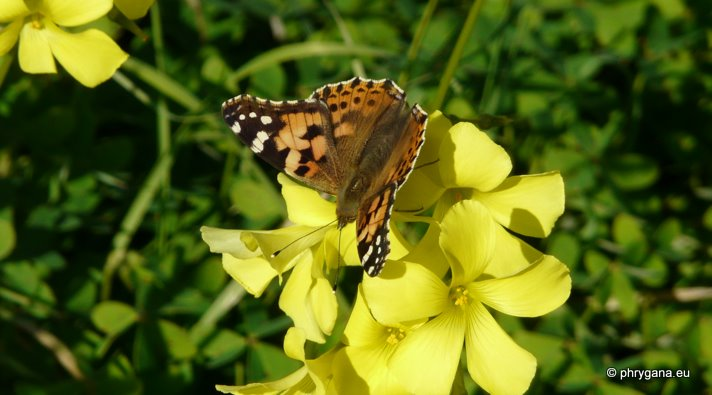

| PHRYGANA | Fauna | Flora | Galles | liste des espèces |
contact -
info - commentaires phrygana1 (at) gmail.com |
| Particularités crétoises | nouveautés | Mines | ressources naturelles |
| Oxalis pes-caprae L. |
| 71 | Flora | OXALIDACEAE | Oxalis L. |
 Oxalis pes-caprae Lagolio 19 décembre 2009 |
| en: Bermuda buttercup -- fr: l'Oxalis des Bermudes -- de: Nickender Sauerklee | |
| Plante légèrement poilue | |
| Feuilles: composées-trifoliées, toutes basilaires, longuement pédonculées. Folioles en forme de coeur, avec de petits points brun foncé violacé. Le feuillage disparaît en été. | |
| Tige souterraine: longs rhizomes blanchâtres enterrés profondément sur lesquels croissent de petits bulbilles | |
| Fleurs: entre 8 et 15 groupées en une panicule lâche sur une tige non feuillée, non ramifiée. Long pédicelle poilu. Corolle jaune (20 - 25 mm). Sépales pointus, poilus. | |
| Anthères: jaunes. Filet blanc jaunâtre. | |
| Hauteur: 5 - 15 (-20) cm | Type biologique: géophyte bulbeux |
| Floraison: novembre décembre janvier février mars avril mai | Altitudes: 0 - 700 m |
| Statut en Crète: naturalisé | |
| Biotopes en Crète: olivaies, vignobles, vergers, bords de chemins, champs cultivés, terrains vagues, ayant tendance à envahir des zones naturelles (forêts, crevasses). | |
| Distribution: région Méditerranéenne | |
| Origine: Afrique du Sud | |
| Plante mellifère | |
| Note: Oxalis pes-caprae s'est naturalisé sur tout le pourtour méditerranéen et a des capacités invasives impressionnantes. Il peut former des tapis importants homogènes, menaçant la flore indigène. | |
| Note: Oxalis pes-caprae est devenu très résistant aux herbicides. | |
| Note: il existe des plantes à fleurs doubles. | |
| Note: Oxalis pes-caprae L. est encouragé par les agriculteurs pour contrôler les herbacées non souhaitées dans les vergers | |
| Usage culinaire: en Crète, les bulbilles acidulés sont parfois consommés. | |
|
 Oxalis pes-caprae Lagolio 19 décembre 2009 |
|
 Oxalis pes-caprae Melambes (Agios Giorgos) 24 décembre 2009 |
 Oxalis pes-caprae Lagolio 19 décembre 2009 |
|
 Oxalis pes-caprae Melambes (Agios Giogos) 15 mars 2011 |
|
 Oxalis pes-caprae Lagolio 20 janvier 2012 |
|
 Oxalis pes-caprae butiné par Vanessa cardui Lagolio 20 janvier 2012 |
| 30 avril 2012 |
| © paul fontaine -- © Phrygana.eu 2007 -- 2013 |